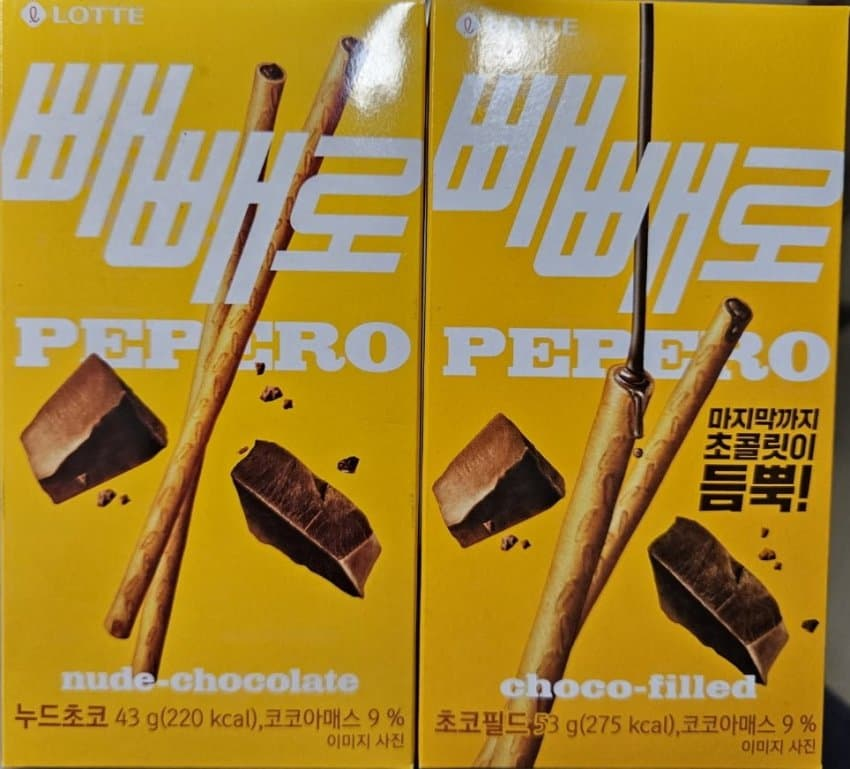

누드 빼빼로 << 틀딱임
초코필드로 개명당함

누드 빼빼로 << 틀딱임
초코필드로 개명당함
3년됨
지랄마
해외에서 오해 산다고 바꾼거구나
처음나왔을때 존나 센세이션해갖고
겉에만 녹여먹고 살살깨먹고 그랬지
누드김밥은?
김필드
밥필드지
김밥필드
누드가 좋다고 ㅡㅡ
전라빼빼로아니야?
누드도ㄷㄷ
나도 어제 애들 유치원에 보낼라고 빼빼로 박스 뜯는데 초코필드? 새로 나왔나? 뜯었더니 누드더라ㅋㅋㅋ 충격이였음 ㅋㅋㅋ
개명당한지 오래되긴했지
어이 니놈! 증량햇구나
그렇지만 그림은 더 야해졌는걸?
엣...?진짜로...?
창씨개명의 설움
아니 이게 무슨소라야 누드김밥은 어떡해
수출용으로 누드 하면 이상해서 바꾼거라던데 누드김밥은 뭐 우리만 그렇게 쓰니까
필드김밥
함유량도 늘었네! 필드초코가 찐이당!
함량은 같아 양이는거지
너가 지금 뭔소리를 한건지 아는거야?
전설의 레전드같은거야? 양은 같은데 양이늘었다고? ㅋㅋㅋㅋㅋㅋㅋㅋㅋㅋㅋㅋㅋㅋㅋㅋ
함유량의 의미와 특징
정의: 물질 속에 포함되어 있는 특정 성분의 분량을 의미합니다.
유의어: 함량(含量)은 함유량의 준말로 쓰이기도 합니다.
활용 예시: 니코틴 함유량, 수분 함유량, 탄산 함유량 등이 있습니다. 함유량이 높다 또는 낮다로 표현합니다.
전체 무게가 증가했는데도 코코아매스가 9%로 동일하니까 특정 성분(코코아매스)의 분량을 늘어난 거잖아 ;;
함량과 양은 서로 다른 개념으로, 함량은 전체 중 특정 성분이 차지하는 비율이나 양을 의미하고 양은 물질의 크기나 무게를 나타내는 물리적 수치를 뜻합니다.
비율이냐 양을 뜻하는 거니까 함량이 양을 뜻한다면 양이랑 같은 거네?
바보개붕이
비율이 같고 과자 전체의 양과 코코아매스의 함향은 늘어난 거지. 함량이 왜 같음
아 틀딱됬네 ㄷㄷ
중량이늘었는데 코코아매스는 그대로?
나도 이번년 5월에알았음 이름바뀐걸 ㅋㅋ
라이스필드 스시롤 하나 주세요
몽둥이 배배로 요즘 안나옴?
피자맛 빼빼로 뽀뽀리 그립읍니다
그런게있었어?
3년차라 아직 세대차이라고 할정돈 아닐듯 ㅋㅋ
AV빼빼로
초코필드라길래 뭔말인지 몰랐는데...누드빼뺴로가 초코필드로 바뀐거야?ㄷㄷ
저거 ㅈㄴ 맛대가리 없어짐
ㅈㄴ맛없어짐 근데
누드모델은 어떠케
엣 우쏘
초코필드는 입에 안감겨 누드~ 빼빼로~
아몬드가 좋아 나는
에라이 ㅋㅋㅋㅋ 그럼 누드김밥도 김밥필드로 불러야겠다?
어시발 진짜야?